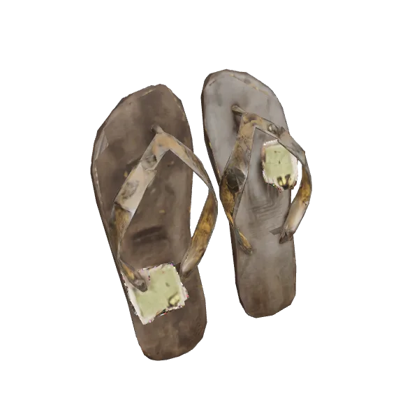

  <!-- 评委版 opening card (vite.config.js puts it in for --mode judge): plain HTML so it shows while the game loads behind
       it; judge.js turns 开始玩 on once the page is ready. One real generation, photo → styled picture → 3D. -->
  <section id="intro" aria-label="万物对战">
    <div class="ihead">
      <div class="imark"><span class="w1">万物</span><span class="w2">对战</span></div>
      <p>拍身边的东西，变成陀螺角色上场对撞</p>
    </div>
    <ol class="iflow">
      <li class="photo"><span><i>1</i>一张照片</span></li>
      <li class="styled"><span><i>2</i>改成游戏画风</span></li>
      <li class="model"><span><i>3</i>变成 3D 角色</span></li>
    </ol>
    <p class="ireal">上面是一次真实生成，从照片到角色约 2 分半</p>
    <div class="ifoot">
      <button type="button" class="go" id="introGo" disabled><span>载入中…</span></button>
      <small class="icredit">原照 Michal Osmenda · CC BY-SA 2.0，已裁切、改图并建模</small>
    </div>
  </section>
